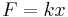
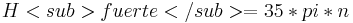

De: La Frikipedia, la enciclopedia extremadamente seria.
De: La Frikipedia, la enciclopedia extremadamente seria. De: La Frikipedia, la enciclopedia extremadamente seria.
«Dame una palanca y te la meto por el culo.»
~ Arquímedes sobre el Genio de Credial
«Y igual a X cuadrado»
~ Jesucristo Parábola de la montaña
«Hay que ver como me gustan tus varitas...»
~ Isaac Newton sobre el capitán Pescanova
Desde tiempos inmemoriables la humanidad ha tendido a tratar de acelerar partículas; remontándonos a la Prehistoria, los cromagnones se aceleraban unos a otros con palos, estacas e incluso piedras, siendo estos utensilios previamente acelerados. A los romanos también les gustaba eso de acelerar las cosas e inventaron las carreras de cuádrigas, en las cuales destacaba como "aceleratvs maximvs", Judá Ben-Hur, que era el que más las conseguía acelerar.
En la trebushe) y el onagro, que dieron unos resultados maravillosos por aquellas épocas. La humanidad siguió avanzando y con este avance sus ansias de acelerar cosas fueron in crescendo hasta llegar a la década de los 80 en la que se empezó a construir el LHC para tratar de satisfacer esas imperiosas necesidades de la humanidad.
Es una máquina con forma de donut enterrada en la tierra en un tunel también con forma de donut cuyas obras equiparan en duración a las de la Sagrada Familia de Barcelona y su utilidad es escasa o prácticamente nula. Esta máquina mediante un complejísimo sistema de muelles y resortes de goma es capaz de acelerar partículas a velocidades próximas a la de una gallina pasando por Etiopía.
La aceleración a la que la máquina puede acelerar partículas viene dada por la famosísima ley de Hooke en la que se dice que  donde k es la constante del resorte. La mecánica utilizada por los ingenieros en este dispositivo es muy similar a la de la máquina de Pinball, a la que han añadido ciertas mejoras como el quitarle la ranura para las monedas para que sea gratis jugar y añadirle unos marcadores de puntuación con neones gigantes.
La gracia de que posea forma circular radica en que si juegan 2 emoción y competitividad entre los jugadores.
La probabilidad de que las bolas de ambos jugadores choquen viene dada por la sección eficaz de dichas bolas; esta sección eficaz depende le la interacción gravitatoria a grandes distancias, y de la interacción fuerte a cortas distancias, donde dicha interacción fuerte tiene el siguiente hamiltoniano: , donde n es un factor que depende de lo bueno que sea el día del bedel del lugar,siendo los valores cuantizados forláyicos de dicha n los siguientes:
Para evitar que la gente haga trampas, se han puesto unos cuantos detectores de bolas en el LHC, los dos más importantes son ATLAS (A Tio Large And Slim [un tio alto y delgado, pues el creador de ATLAS era así]) y CMS (Con Mucha Salsa), que es el detector latino, donde sus operarios se pasan el día bailando salsa y reggaeton.
Los operarios y cientificos de CMS son objeto constante de burlas, vejaciones, bullying y novatadas por parte del resto de la plantilla oficial de LHC.
P2+P2 (D 1 PN) = 5 X (|) T -->( Significado literal: "Pedos + Pedos ( de un pene) = 5 por el culo te la hinco").
Fórmula alternativa:
2P2A+A2=AKK -->( Significado literal: "Dos pedos amasados igual a caca").
| | ||
|
Materia
Magnitudes
Mecánica
Cinética y Dinámica
Energía
Física Cuántica y Nuclear
Científicos
|
Autor(es):